ПРО МЕНЕ
Привіт! Я Наталія Оленчук
Ласкаво прошу на мій сайт. Головний жанр в якому я працюю це сімейна і весільна фотозйомка. Чому я вибрала саме цей напрям? Інколи мені здається, що не було ніякого усвідомленого вибору - все сталось само собою. За освітою я соціальний працівник і цікавість до відносин між людьми – спадок від першої професії. Я люблю фотографувати LOVE STORY, весілля, сім'ї в очікуванні дітей та дітей будь якого віку. Фотографія для мене це спосіб проникнути в глибину відносин між людьми і з самим собою.
МОЇ РОБОТИ
ВЕСІЛЛЯ
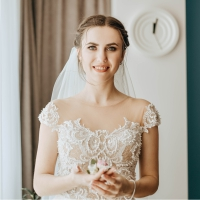 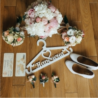 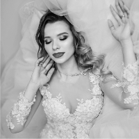 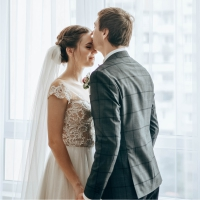LOVE STORY
 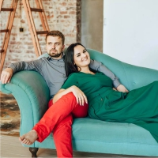
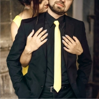
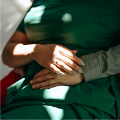
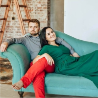
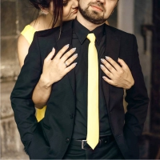
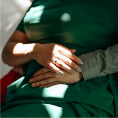
СІМЕЙНА ФОТОСЕСІЯ
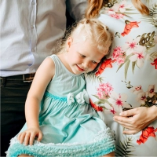 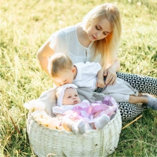 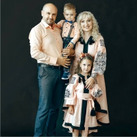
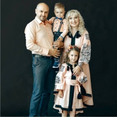
ФОТОСЕСІЯ ВАГІТНОСТІ
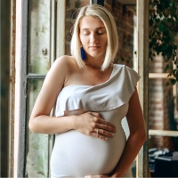 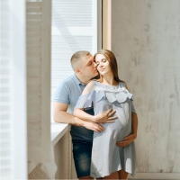 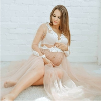
Скільки коштує весільна фотосесія
БАЗОВИЙ
ПАКЕТ
5 годин зйомки
200 фото з обробкою
Диск з індивідуальним
оформленням
50% знижки
на весільну
чи передвесільну зйомку
Ціна 200 у.о.
СТАНДАРТНИЙ
ПАКЕТ
9 годин зйомки
Усі фото з обробкою
Диск з індивідуальним
оформленням
Фотокнига
20х30 у подарунок
Ціна 300 у.о.
ПРЕМІУМ
ПАКЕТ
12 годин зйомки
Усі фото з обробкою
Диск з індивідуальним
оформленням
Високоякісна фотокнига
Ціна 400 у.о.